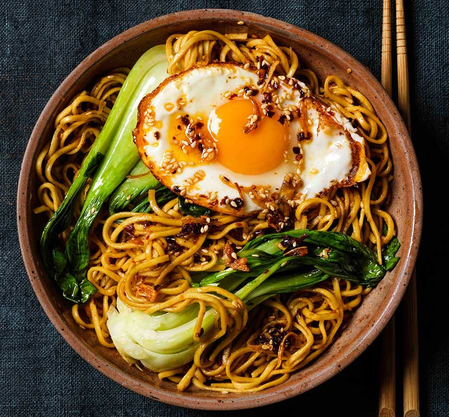

Delicious Noodles

Up the ante and bring a Shanghai noodle bar to your home with this Xi'an noodle recipe.
Ingredients
- Bok Choi
- Eggs
- Ramen Noodles
- Soy sauce
- Garlic
Steps
- Place chicken, onion, chilli, coriander root and half the ginger in a
large casserole over medium-high heat. Cover with 2L (8 cups) cold water.
Bring to the boil, then reduce heat to low and simmer for 20 minutes or until
chicken is cooked through. Remove from heat and allow chicken to cool in water.
Shred chicken.
- Heat sunflower oil in a small frypan over medium-high heat. Cut remaining ginger
into matchsticks and squeeze in paper towel to remove excess liquid.
- Carefully add to frypan and cook, stirring, for 2-3 minutes until crisp and golden.
Cook noodles according to packet instructions, then drain and refresh
- Combine dressing ingredients in a bowl. Toss chicken with coriander leaves and white
spring onion. Pour dressing into the base of 4 serving bowls.
- Top with noodles, chicken, green spring onion, cucumber, fried ginger and micro herbs.